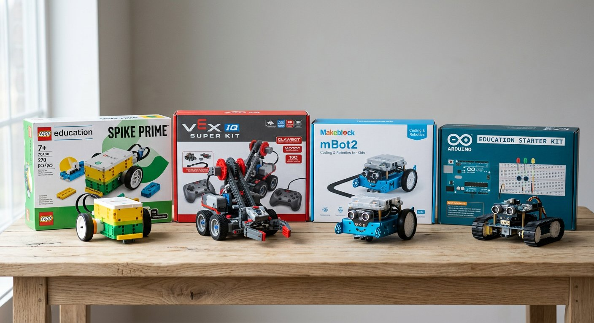

Qué cubre esta guía
- Criterios para elegir un kit educativo
- Qué kit conviene según la edad
- Comparativa general de ecosistemas
- LEGO Education SPIKE (Essential y Prime)
- VEX Robotics: IQ y V5
- Makeblock mBot2 y mBot Neo
- Placas Arduino y kits compatibles de bajo costo
- micro:bit y MakeCode
- Presupuestos típicos por curso
- Consejos de compra e importación en Chile
- Preguntas frecuentes
Criterios para elegir un kit educativo
Antes de comparar marcas, define qué necesitas. Un kit excelente para competencias puede ser una mala compra para un taller de iniciación, y viceversa. Los cinco criterios que más pesan en la decisión son:
- Rango de edad y complejidad mecánica: piezas grandes y pocos motores para básica; piezas técnicas y múltiples sensores para media.
- Durabilidad: en un colegio el equipo se usa a diario por manos poco cuidadosas; la robustez estructural y la facilidad de reponer piezas importan más que el brillo del empaque.
- Costo por estudiante: calcula el costo total dividido por la cantidad de estudiantes que usará cada kit durante su vida útil, no solo el precio de la caja.
- Currículum y soporte docente: las marcas serias incluyen secuencias didácticas, guías y formación; eso ahorra decenas de horas de preparación.
- Camino de crecimiento: un ecosistema que permite pasar de bloques a texto, o de un kit básico a uno de competencia, evita quedarse sin desafíos en dos años.
Qué kit conviene según la edad
| Nivel | Edad aprox. | Plataformas recomendadas | Lenguaje de programación |
|---|---|---|---|
| Parvularia | 4–6 años | Bee-Bot / Blue-Bot, Cubetto | Botones físicos, sin pantalla |
| 1º a 4º básico | 6–9 años | LEGO SPIKE Essential, VEX 123/GO, micro:bit | Bloques visuales (Scratch-like) |
| 5º a 8º básico | 10–13 años | mBot2, SPIKE Prime, VEX IQ, micro:bit | Bloques + Python opcional |
| Enseñanza media | 14–18 años | VEX V5, SPIKE Prime, Arduino IDE | Python, C/C++ |
Comparativa general de ecosistemas
| Ecosistema | Edad sugerida | Programación | Costo por kit (CLP aprox.) | Fortaleza principal |
|---|---|---|---|---|
| LEGO SPIKE Essential | 6–10 años | Bloques (Scratch) | $180.000 – $280.000 | Robustez, currículum y familiaridad de las piezas |
| LEGO SPIKE Prime | 10+ años | Bloques + Python | $350.000 – $500.000 | Mecánica técnica y camino a Python |
| VEX IQ | 8–14 años | Bloques + Python | $400.000 – $650.000 | Ecosistema de competencia estructurado |
| VEX V5 | 14+ años | Bloques + Python + C++ | $800.000 – $1.500.000 | Competencia de alto nivel y robustez industrial |
| Makeblock mBot2 | 8–14 años | Bloques (mBlock) + Python | $90.000 – $150.000 | Mejor relación costo/prestaciones |
| Arduino compatible + set | 10+ años | Bloques (mBlock) o C/C++ | $8.000 – $20.000 | Mínimo costo, máxima flexibilidad en electrónica |
| micro:bit | 8–14 años | MakeCode (bloques) + Python | $25.000 – $45.000 | Simulador y comunidad educativa masiva |
LEGO Education SPIKE (Essential y Prime)
La línea SPIKE es el estándar de facto en muchos colegios por su robustez mecánica, su aplicación de bloques basada en Scratch y su abundante material curricular en español. Las piezas encajan con precisión, los motores y sensores son duraderos, y el software se actualiza con frecuencia.
- SPIKE Essential: hub con dos puertos, piezas grandes, motores simples y sensores de color; ideal para que los más pequeños construyan mecanismos y comprendan causa-efecto.
- SPIKE Prime: hub programable de seis puertos, motores y sensores más potentes (color, distancia, fuerza), soporte para Python y piezas Technic que permiten brazos, vehículos y mecanismos complejos.
El principal costo es el precio por kit, que se justifica cuando el colegio valora el currículum listo y la durabilidad a largo plazo. Para competencias tipo FIRST LEGO League, SPIKE Prime es una de las plataformas más usadas y con mayor documentación disponible.
VEX Robotics: IQ y V5
VEX se distingue por estar construido alrededor de su circuito de competencias (VEX IQ Challenge y VEX Robotics Competition), con piezas metálicas y de plástico de alta resistencia, motores con encoders y un sistema de competencia muy estructurado por edades.
- VEX IQ: piezas de plástico, controlador con pantalla, programación por bloques y Python; la puerta de entrada al circuito competitivo para básica.
- VEX V5: estructura metálica, motores de alto torque, sensores avanzados y programación en bloques, Python o C++; el estándar competitivo para enseñanza media.
Es la opción indicada si el colegio planea participar formalmente en competencias, porque el ecosistema completo —piezas, canchas, reglamentos y comunidad— está integrado. El costo inicial es el más alto de la lista, pero se amortiza en programas de varios años con equipos competitivos.
Makeblock mBot2 y mBot Neo
Los mBot de Makeblock ofrecen la mejor relación costo/prestaciones de los robots cerrados: un chasis completo con motores, sensores de línea, ultrasonido y luz, listo para armar en una sesión y programar con mBlock (bloques) o Python.
- mBot2 / mBot Neo: basado en un controlador con Wi-Fi y pantalla, con sensores más avanzados y soporte para inteligencia artificial básica con la cámara opcional.
- mBlock: el entorno de programación por bloques permite además ver el código generado en Python, lo que facilita la transición al texto. Se detalla en la guía de programación por bloques.
Es una elección muy popular para cursos de 5º básico a 1º medio que quieren un robot móvil completo sin pagar el precio de LEGO o VEX, y sin la fricción de cablear una placa desde cero.
Placas Arduino y kits compatibles de bajo costo
Para talleres de electrónica real, ninguna plataforma supera la flexibilidad y el costo de las placas Arduino y sus compatibles. Un set básico por equipo (placa, protoboard, LEDs, resistencias, sensores y servos) cuesta una fracción del precio de cualquier kit de marca y enseña el cableado, la polaridad y la lógica de hardware que los robots cerrados esconden.
- Ventajas: costo mínimo, repuestos baratos y abundantes, y la mayor cantidad de tutoriales disponibles en español —incluida esta guía de primeros pasos.
- Desventajas: requiere más preparación docente, componentes más frágiles y sin chasis mecánico incluido; los robots móviles exigen comprar ruedas, chasis y drivers por separado.
La combinación ganadora para muchos colegios es usar Arduino para las unidades de electrónica y programación, y un número menor de kits cerrados (mBot o SPIKE) para los proyectos integradores y las competencias.
micro:bit y MakeCode
La placa micro:bit de la BBC es una alternativa educativa excelente: incluye matriz de LEDs, botones, acelerómetro, brújula, radio y pines de expansión, todo programable desde el navegador con MakeCode (bloques o Python) y con un simulador integrado.
- Simulador en el navegador: permite programar y probar sin placa física, ideal para clases numerosas o en línea.
- Costo bajo y comunidad enorme: hay miles de actividades y secuencias didácticas traducidas al español.
- Limitaciones: menos orientada a construcción mecánica; para robots móviles se combina con kits de chasis o con la línea micro:bit de robots educativos.
Presupuestos típicos por curso
| Escenario | Equipamiento (10 equipos) | Inversión aprox. (CLP) |
|---|---|---|
| Mínimo (electrónica) | 10 placas Arduino compatibles + sets básicos | $120.000 – $200.000 |
| Intermedio (robots móviles) | 10 mBot2 + accesorios | $900.000 – $1.500.000 |
| Competitivo (marca) | 8–10 kits SPIKE Prime o VEX IQ | $3.000.000 – $6.500.000 |
| Mixto recomendado | 10 sets Arduino + 4–5 mBot2/SPIKE | $600.000 – $1.800.000 |
El escenario mixto suele ser el más eficiente: cubre a todo el curso con electrónica de bajo costo y reserva los kits de marca para proyectos integradores y competencias, distribuyendo la inversión y reduciendo el riesgo de depender de un único proveedor.
Consejos de compra e importación en Chile
- Suma todos los costos: al precio internacional se agregan envío, impuesto de internación (6% o arancel aplicable) e IVA (19%). Pide el costo final puesto en Chile antes de decidir.
- Verifica garantía y repuestos: motores y sensores se dañan; compra una o dos unidades de repuesto de los componentes críticos junto con el pedido principal.
- Prefiere distribuidor local cuando exista: el soporte, la garantía y la reposición son más rápidos, y evitas sorpresas de aduana.
- Revisa el idioma del software y del currículum: las plataformas serias tienen aplicaciones y guías en español; confírmalo antes de comprar.
- Cotiza por volumen: para pedidos de curso completo, los distribuidores suelen ofrecer descuentos institucionales y facturación que facilita la rendición de fondos SEP.
Conclusión
No existe un único "mejor kit": existe el kit correcto para tu edad objetivo, tu presupuesto y tu plan pedagógico. Para empezar con poco dinero, Arduino compatible y micro:bit son imbatibles; para un robot móvil listo y amigable, mBot2 ofrece el mejor equilibrio; para currículum robusto y mecánica avanzada, LEGO SPIKE; y para competencias formales, VEX. La recomendación más sensata para la mayoría de los colegios es un enfoque mixto y por fases, acompañado de la planificación que detallamos en la guía para llevar la robótica al aula.
Preguntas frecuentes
¿Cuál es el mejor kit de robótica para empezar con un presupuesto limitado?
Para presupuestos limitados, la opción más eficiente es empezar con placas Arduino compatibles y componentes genéricos, que permiten equipar a un curso completo por una fracción del costo de los kits de marca. Una placa compatible cuesta entre 6.000 y 15.000 pesos chilenos, y un set básico de protoboard, LEDs, resistencias y cables agrega entre 2.000 y 5.000 pesos por equipo. Si se busca una plataforma cerrada más amigable sin llegar al costo de LEGO o VEX, el ecosistema micro:bit con su simulador y programación por bloques es una excelente alternativa de bajo costo con gran comunidad educativa.
¿Qué diferencia hay entre LEGO SPIKE Prime y SPIKE Essential?
Ambos pertenecen a la línea LEGO Education SPIKE y comparten la aplicación de programación por bloques basada en Scratch. SPIKE Essential está orientado a educación básica (aproximadamente 6 a 10 años), con piezas más grandes y sencillas, un hub de dos puertos y desafíos de menor complejidad mecánica. SPIKE Prime está orientado a enseñanza media (aproximadamente 10 años en adelante), con piezas Technic más técnicas, un hub programable de seis puertos, motores más potentes y sensores adicionales como el de color, distancia y fuerza. La elección depende principalmente del rango de edad y de la complejidad mecánica que se quiera abordar.
¿Conviene comprar kits originales o placas Arduino compatibles?
Depende del objetivo. Las placas Arduino compatibles usan el mismo microcontrolador ATmega328P y son funcionalmente equivalentes para proyectos educativos, a un costo muy inferior; son ideales para talleres con presupuesto acotado y para aprender electrónica real. Los kits originales o de marca (LEGO, VEX, Makeblock) aportan un ecosistema cerrado con piezas mecánicas, aplicaciones integradas, material curricular y soporte, que reduce drásticamente el tiempo de preparación del docente y la tasa de fallas mecánicas, a un costo mayor. Muchos colegios combinan ambos: placas compatibles para unidades de electrónica y un número menor de kits de marca para proyectos integradores y competencias.
¿Qué consideraciones de compra debo tener al importar kits a Chile?
Al importar kits de robótica a Chile conviene verificar el costo total incluyendo envío, impuesto de internación (6% o arancel aplicable) e IVA (19%), que se suman al precio publicado en sitios internacionales. También es clave revisar la garantía y la disponibilidad de repuestos: si un motor o sensor falla, reemplazarlo desde el extranjero puede tardar semanas, por lo que conviene comprar una o dos unidades de repuesto de los componentes más críticos. Siempre que sea posible, preferir distribuidores locales o importadores con stock y soporte en el país, y confirmar que el software o la aplicación asociada esté disponible en español.
¿Cuántos kits necesito para un curso de 30 estudiantes?
La recomendación estándar es trabajar en equipos de 2 a 3 estudiantes por kit, por lo que un curso de 30 estudiantes necesita entre 10 y 15 kits. Para kits de marca como LEGO SPIKE o VEX, muchos colegios empiezan con un número menor (por ejemplo, 8 a 10 kits) y complementan con estaciones de trabajo rotativas, simuladores y placas de bajo costo, de modo que no todos los equipos usan el kit de marca simultáneamente. Para placas Arduino genéricas, equipar el curso completo es mucho más accesible y se recomienda directamente un kit por equipo de 3 estudiantes.
Este artículo es contenido editorial independiente: no contiene ubicaciones patrocinadas ni enlaces de afiliado. Si en futuras actualizaciones se agregan enlaces a proveedores de kits, serán identificados explícitamente. Los precios son rangos referenciales para el mercado chileno en 2026 y pueden variar por distribuidor, tipo de cambio e impuestos; verifica siempre el valor vigente antes de comprar. Si detectas un error en esta guía, por favor avísanos.
Sigue aprendiendo
Ya elegiste el kit; ahora aprende a integrarlo al plan de clases con la Guía para Docentes: Cómo Llevar la Robótica al Aula, y domina el software con la guía de programación por bloques con mBlock y Scratch.
Fuentes primarias y lecturas recomendadas
Las especificaciones de cada plataforma deben verificarse en la documentación oficial del fabricante, que se actualiza con frecuencia.
- LEGO Education — Línea SPIKE (Essential y Prime)
- VEX Robotics — Plataformas IQ y V5
- Makeblock — mBot2 y entorno mBlock
- micro:bit — Documentación oficial y MakeCode
- Arduino Education — Recursos oficiales para el aula
Enlaces revisados: 13 de agosto de 2026.